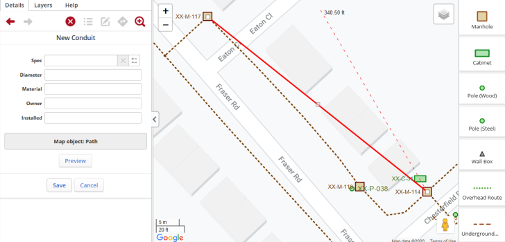
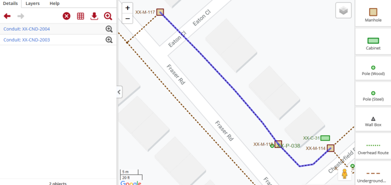

To add a conduit:
On the toolbar, click the Add Object icon , and then select the type of conduit to add, for example Blown Fiber Tube.
On the map, draw a line between the required start and end structures.

Figure: Adding a conduit
In the Details tab, set the attributes for the conduit. Note that if your administrator has configured specifications for the object type, you can select multiple attributes, as described in Setting a specification.
Save your changes. The conduit is added. Note that if your conduit object has been configured with one, you can place multiple conduits along the path by entering a value in the count field.

Figure: Example conduit
Notes:
A separate conduit object is created in each route along the structure. In the above example, the application creates two conduits:
Depending on the conduit type you selected, the conduits may be open at each structure or continuous (passthrough).